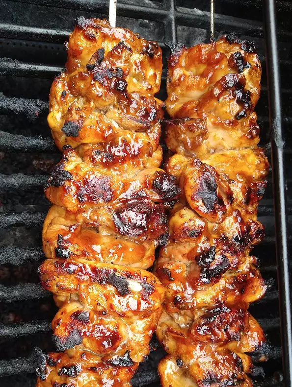

Filipino-Style Barbecue Chicken

The best barbecue chicken you've never had
I worked with Filipino cooks many years ago, and I vaguely remember them using,
and loving, something called banana sauce, which I thought was a type of hot sauce,
but apparently it's the exact same thing as banana ketchup, which is what most
recipes call for. I don't think I ever even tried it, but now, after making this,
I'm officially a big fan. So, whether you can find a bottle of ketchup at the store,
or you make it from scratch, I really must insist you give this incredible barbecue
chicken a try soon.
Ingredients
For the Banana Ketchup:
- 1 medium very ripe banana, mashed
- ¼ cup tomato paste
- ¼ cup apple cider vinegar
- 2 tablespoons brown sugar
- 2 teaspoons vegetable oil
- 2 teaspoons freshly grated ginger
- ½ teaspoon onion powder
For the Chicken and Marinade:
- ½ cup prepared banana ketchup
- ¾ cup lemon-lime soda (such as 7-Up®)
- ½ cup soy sauce
For the Basting Sauce:
- 3 tablespoons reserved banana ketchup
- 3 tablespoons soy sauce
- 1 tablespoon brown sugar
Steps
- Mash ripe banana, tomato paste, vinegar, brown sugar, oil, ginger, onion powder,
garlic powder, cayenne, salt, allspice, and turmeric together in a saucepan.
Add water and stir to combine.
- Place over medium-high heat and bring to a simmer. Stir to combine. Reduce heat
to medium and simmer until reduced and thickened, 7 to 10 minutes.
Remove from heat; reserve 3 tablespoons for the basting sauce, leaving
about 1/2 cup for the marinade.
- Transfer ½ cup banana ketchup to a bowl and add lemon-lime soda, soy sauce, garlic,
brown sugar, black pepper, and lemon juice for the marinade. Whisk until combined.
Add halved chicken thighs and toss to coat.